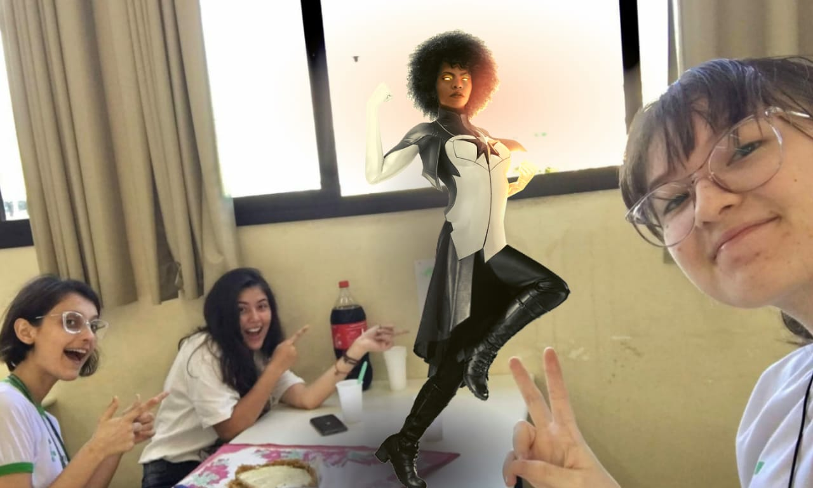

TURMA 228
A turma 228 é a oitava turma de informática do período vespertino do Instituto Federal de Ciência e Tecnologia de Mato Grosso do Sul, Campus Campo grande. Atualmente, a turma está cursando o quinto semestre.
ALUNAS
Nós três, Ana Paula Recalde, Letícia Andrade e Mariana Ramires, viemos de escolas públicas e temos muito interesse em diversas causas, principalmente na integração de mulheres na ciência.
